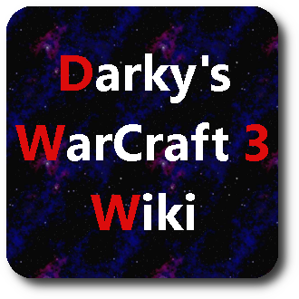
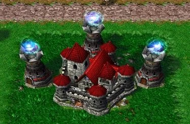
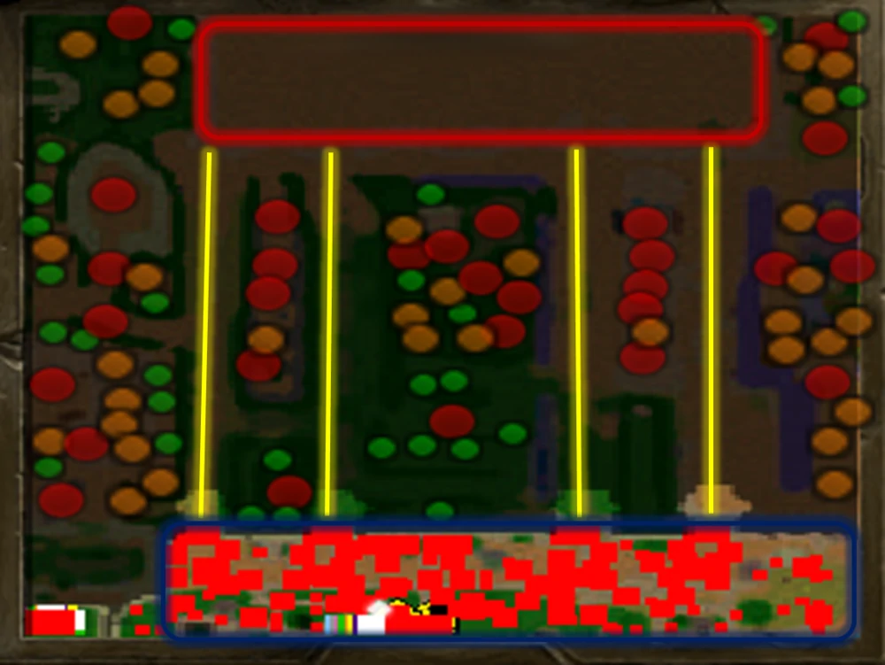
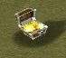
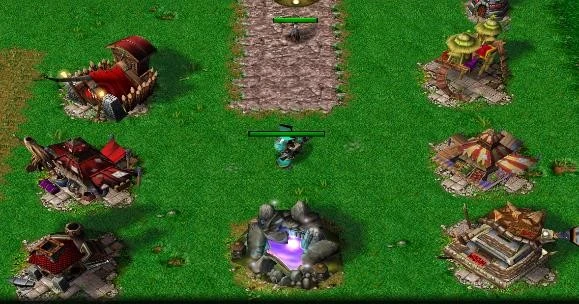

Персонажи
Магазины
Боссы
Предметы
Войти
Что это за страница?
Привет читатель! Эта страница создана с целью помочь разобраться во внутри-игровой механике, одной интересной карты ВарКрафта "Darky's". Страница была разработана программистом-новичком, так что не судите строго.
Цель игры
В этой игре 2 фракции сражаются друг против друга, Империя (Силы Света) и Силы Тьмы. Силы Тьмы вначале имеют небольшой перевес и этот перевес все время растет.Чтобы компенсировать это, вы будете играть Героем Империи, который может повышать уровень, получать/улучшать способности и экипировать вещи (например, MOBA).Ваша главная цель - защитить свой Замок от Темных Сил и разрушить вражескую Цитадель.

Карта
Карта разделена на 4 большие области:  Город Империи (зона ВМФ) Где вы можете найти Магазины, Замок для защиты, NPC... Город Тьмы (Красная зона) Где вы можете найти вражескую Цитадель и где появляется каждое подразделение Темных Сил. Четыре полосы движения (первая полоса слева, четвертая справа, центральная полоса - третья) Джунгли (везде) В основном вы будете проводить время на нескольких дорожках, но в середине игры вы будете путешествовать между различными зонами джунглей и, наконец, атаковать вражескую Цитадель.
Начало
Вы начинаете игру с 780 золотыми, и вы должны потратить их на то, что сможете, чтобы быть в максимальной безопасности на линии. Два хороших варианта — кожаный шлем (400 г) или доспехи низкого качества (700 г), оба из которых продаются на рынке . Кожаный шлем поможет исцелить вас после того, как вас ударят враги, а броня низкого качества поможет уменьшить получаемый вами урон, а также даст вам 150 дополнительных единиц здоровья. Если вы купите Кожаный Шлем, у вас останется достаточно золота, чтобы также купить Вьючную Лошадь , медленную, управляемую единицу, у которой есть слоты в инвентаре. Это может помочь вам покупать предметы, не покидая линию и не теряя опыта. Вы также можете получить доступ к цветному пьедесталу Рога Кенария вашего персонажа, который позволит вам выжить немного дольше в начале карты.
Економика
В Hero of the Empire нет пассивно генерируемого золота, поэтому весь ваш доход почти полностью поступает от фарма врагов. Более того, единственный способ получить золото с врагов — убить их, нанеся по ним финальный удар/ластхит. Сначала это может быть очень сложно из-за небольшого количества урона, которое большинство героев наносят на ранней стадии. Вы также можете получить дополнительное золото из предметов, сброшенных врагами. Только боссы и нейтральные крипы могут выбрасывать предметы, а не линейные крипы. Когда предмет падает, он появляется как сундук на полу: Выпадающие зелья имеют определенный цвет сундука: зеленый для зелий здоровья, синий для маны и фиолетовый для зелий пополнения (как маны, так и HP). Такие зелья можно продать в магазине гоблинов-торговцев , чтобы получить дополнительное золото .
Покупка и улучшение предметов
Вы можете приобрести свои первые предметы и набор лошадей в магазинах в зоне возрождения. Зона возрождения с первыми 6 магазинами и Фонтаном Силы Вы быстро поймете, что можете создавать предметы более высокого уровня, если вам любопытно и вы нажимаете на здания в городе Империи. Эти продвинутые предметы можно получить, объединив несколько других предметов и купив рецепт, связанный с ним. Чтобы получить продвинутый предмет, вам нужно иметь рецепт и необходимые предметы в одном инвентаре (это может быть инвентарь вашего Героя или инвентарь Лошади). Необходимые предметы исчезнут, а рецепт превратится в настоящий предмет. Также есть секретные рецепты, которые не упоминаются в игре. Но не для новичков, потому что речь идет о предметах очень высокого уровня.
Лечение / Восстановление маны
Вы можете лечить и восстанавливать ману несколькими способами:
Ожидая и рассчитывая на регенерацию здоровья в секунду и регенерацию маны в секунду, чтобы восстановить их.
Подойдя к Фонтану Силы (зона возрождения).
Употребляя зелья.
Используя заклинание « Восстановление » вашего пьедестала «Рог Кенария» (срабатывает только 3 раза).
Используя активное умение Героя
Похищая жизнь своим врагам (пассивные навыки героя, такие предметы, как Маска смерти или Клыки вампира ...)
Смерть
Смерть в Hero of the Empire может быть крайне пагубной, но это не конец игры. После смерти вы возродитесь через короткое время, которое увеличивается по ходу игры, и потеряете 20% вашего текущего золота.